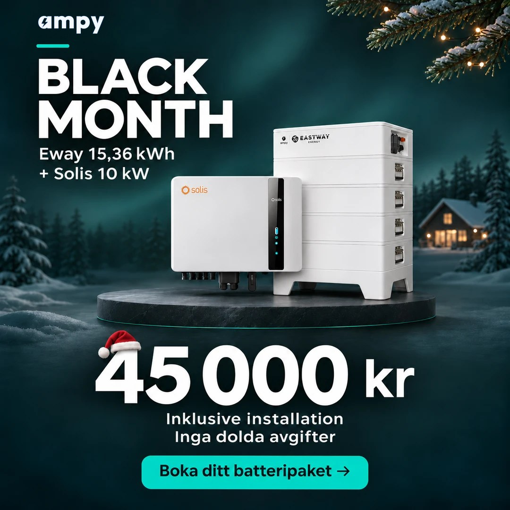
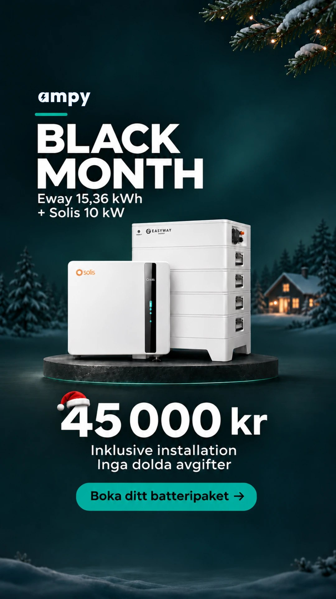
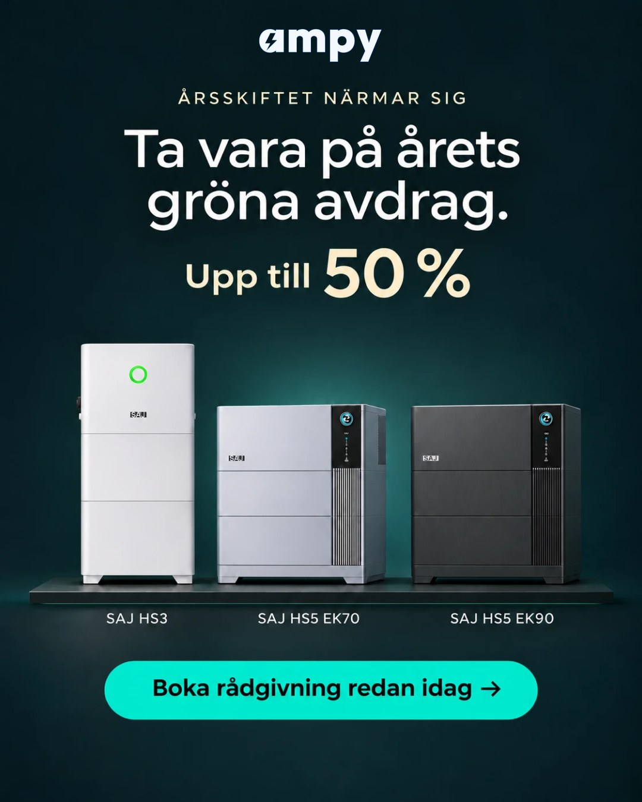
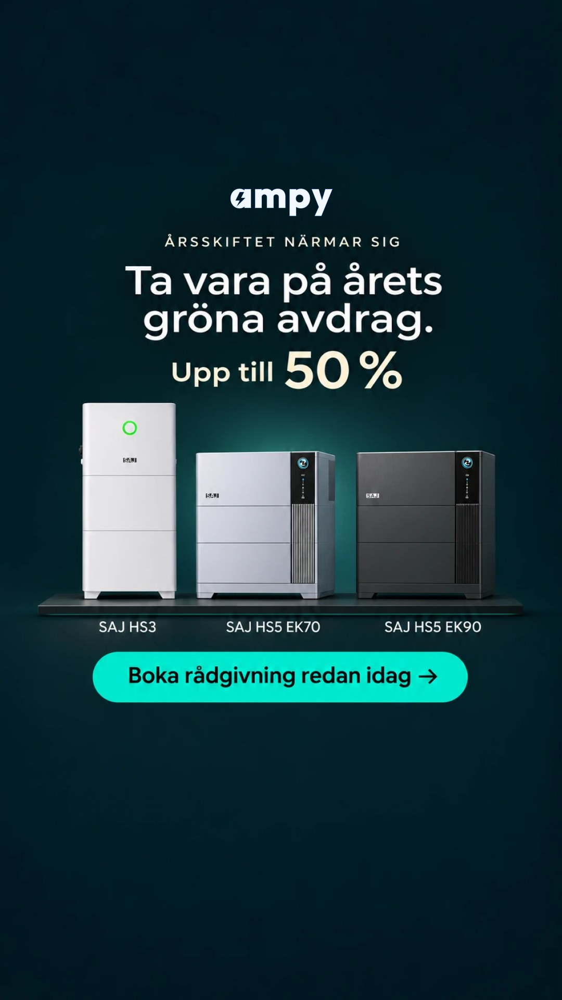

BL-BOFU · två nya uppsättningar, båda PAUSADE. Riktig Ampy-logga i SAJ-bilderna (AI-loggan och strecket borttagna). 11 november 2026.


Rubrik
Solcellsbatteri + installation = 45 000 kr ⚡
Brödtext
Black Month: solcellsbatteri + installation för 45 000 kr ⚡🏠 Priset gäller efter 50 % grönt avdrag. Avdraget kräver att du har egna solceller. I paketet ingår: - Eway-batteri 15,36 kWh (2 moduler) - Solis hybridväxelriktare 10 kW - Installation av våra egna elektriker - Vi ansöker om det gröna avdraget åt dig Årets avdrag går inte att spara till nästa år, så slutbetala senast 31 december. Fyll i formuläret så kontaktar vår energirådgivare dig inom 1 arbetsdag med ett fast pris. Rådgivningen är kostnadsfri och utan köpkrav.
Beskrivning
(tom)
Knapp
Få offert → formuläret
Rubrik
Eway 15,36 kWh + Solis 10 kW för 45 000 kr ⚡
Text
Nyttja 50% grön teknik avdrag innan det brinner inne. Avdraget gäller både material och arbete.
Frågor och tacksida
Samma som "Battery: Price ads (Final v2)": Har du solceller idag? · När vill du ha batteriet på plats? · namn, telefon, e-post, postnummer · Tack! En energirådgivare hör av sig inom 1 arbetsdag ⚡ + knapp till batterikalkylatorn.
I Meta (allt pausat)
Uppsättning 120256151771770350 · annons 120256151777160350 · formulär 1493551905957773
150 kr/dag (förslag), slut 30 nov


Rubrik
Solcellsbatteri med 50 % grönt avdrag ⚡
Brödtext
Ta vara på årets gröna avdrag: 50 % på solcellsbatteri + installation ⚡🏠 Avdraget gäller arbete och material, upp till 50 000 kr per person och år. Det kräver att du har egna solceller. Vi installerar tre batterier från SAJ: - SAJ HS3 - SAJ HS5 EK70 - SAJ HS5 EK90 Vår energirådgivare hjälper dig välja det som passar ditt hus och din förbrukning. Våra egna elektriker sköter allt, från installation till driftsättning. Årets avdrag går inte att spara till nästa år, så slutbetala senast 31 december. Fyll i formuläret så kontaktar vår energirådgivare dig inom 1 arbetsdag. Rådgivningen är kostnadsfri och utan köpkrav.
Beskrivning
(tom)
Knapp
Få offert → formuläret
Rubrik
Solcellsbatteri med 50 % grönt avdrag ⚡🏠
Text
Avdraget gäller arbete och material, upp till 50 000 kr per person och år, och återställs 2027.
Frågor och tacksida
Samma som "Battery: Price ads (Final v2)": Har du solceller idag? · När vill du ha batteriet på plats? · namn, telefon, e-post, postnummer · Tack! En energirådgivare hör av sig inom 1 arbetsdag ⚡ + knapp till batterikalkylatorn.
I Meta (allt pausat)
Uppsättning 120256151772590350 · annons 120256151783200350 · formulär 4066615590309943
150 kr/dag (förslag), slut 31 dec